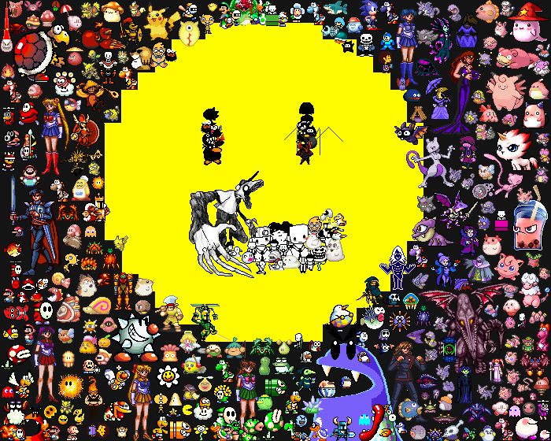
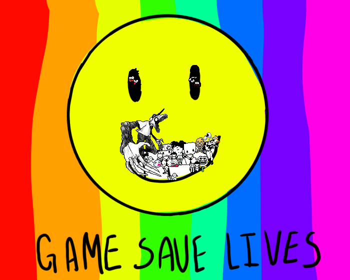

I have had a rough childhood, nothing but extreme twists and turns. I've struggled alone and had to face everything on my own. However games have been my only escape from reality and have been not only my friend, but my entire life. I decided to make a collage of all the games that have been in my childhood and so forth throughout my life. I turned it into a short gif animation to show my appreciation and send a message to anyone who sees this that games make a dark life be colorful and fun.
I've also decided to include a still photo of both the finished collage and the Games Save Lives logo
Here is also a progress gif on making the collage
